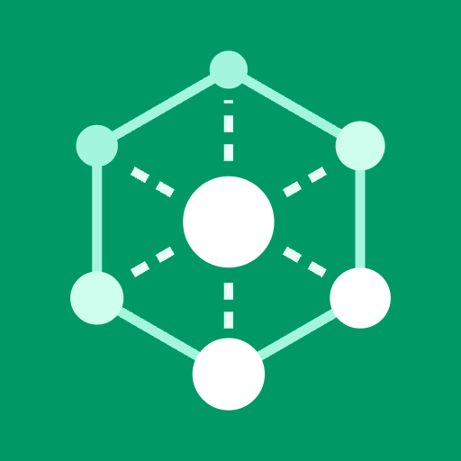
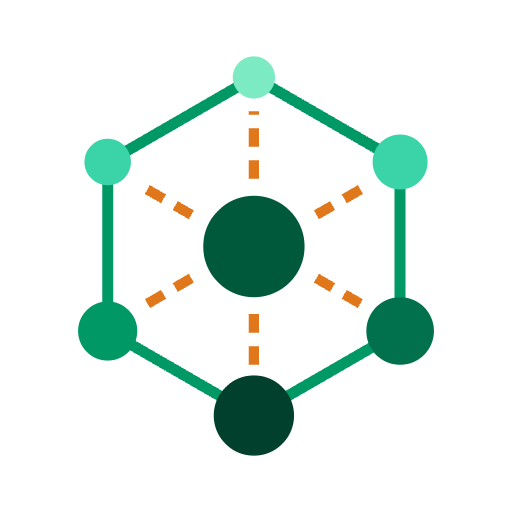

Primary mark · 5 colourways
PNG: mark-dark / mark-light @ 1024 512 256 128 64 · knockout @ 512 256 128 · mono, one-ink @ 512 256
Small-size cuts
The 24 cut drops the three far nodes; the 16 cut drops the dashes too and the cage goes solid. Never scale the full mark below 24px.
App icons · full-bleed square
appicon-dark · primary

appicon-green · no orange
appicon-white
Dark is primary — orange sits at brand green's own luminance, so the green tile carries no orange. Corners are square in the file; iOS and Android mask them.
Lockups · SVG only
Lockups ship as SVG with live <text> so the tracking stays editable — Inter must be installed, or convert to outlines before handing off. No PNG lockups: rasterising text belongs to whoever owns the final font.